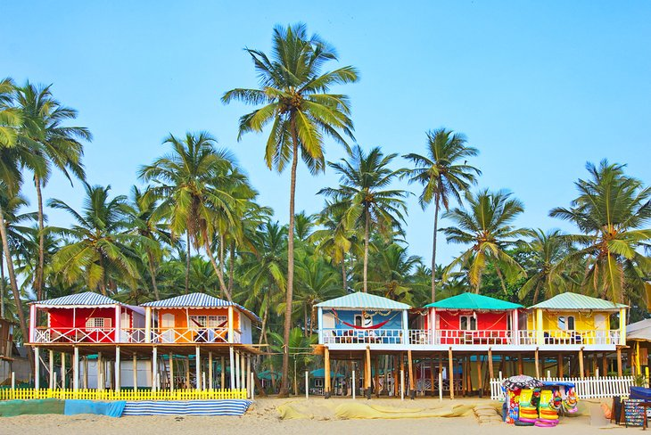
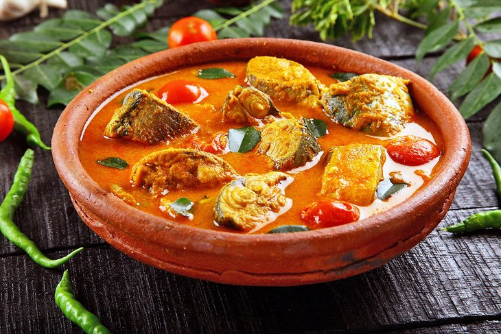
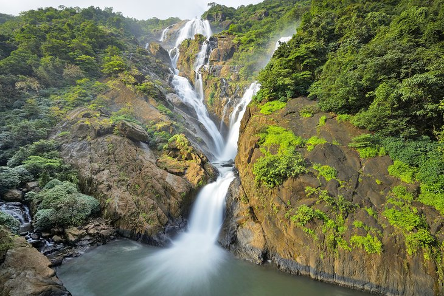
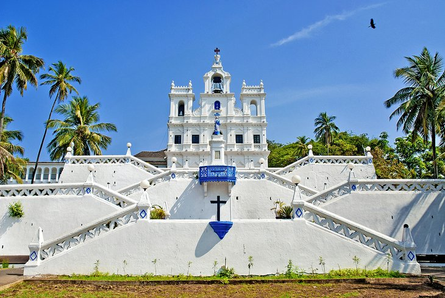

Famous Places to Visit in goa
-

BEACHES
Nearly every tourist who visits the area spends a day at Palolem Beach, a crescent-shaped stretch of white sand that overlooks the Arabian Sea in south Goa.
-

RESTAURANTS
Food is a major attraction in Goa. This part of India has a distinctive cuisine that blends Portuguese and Goan flavors, setting it apart from all the other food around India. Expect fiery flavors, fresh-caught seafood, and an abundance of coconut in the dishes..
-

WATERFALL
Aquatic adventures go beyond the beach in Goa. The state is also home to Dudhsagar Falls, a spectacular four-tiered waterfall that towers some 310 meters above the earth. It's one of India's tallest waterfalls and a perpetually popular attraction for day trips around Goa
-

Church of Our Lady of the Immaculate Conception
Make your way to the laid-back city of Panaji to visit another one of Goa's historic churches: The Church of Our Lady of the Immaculate Conception.
Travel Packages
-
GOA HERITAGE TOUR 6 DAYS
- Duration: 6 days
- Price: 6000/- per person
- BEACHES,Indian Restaurants, Dudhsagar Falls
BOOKING NOW
-
GOA Heritage Tour 10 DAYS
- Duration: 10 days
- Price: 10000/- per person
- Includes:BEACHES,Indian Restaurants, Dudhsagar Falls, Reis Magos Fort, Mangeshi Temple
BOOKING NOW